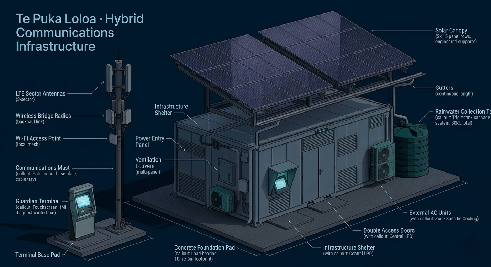

A solar-powered, cyclone-rated sovereign communications network. It runs without the internet. It survives storms. It belongs to the people of Tuvalu — no foreign carrier required.
"Each node thinks locally, the Core thinks globally, and the human decides."
Each node is not just a machine —
it is a steward of connection.
Te Puka Loloa · The Long Book · Tuvalu Sovereign Vision v3.1
Te Puka Loloa is more than an antenna. It is a commitment — to connection, to safety, to self-determination. Here is what every node delivers to the people of Tuvalu.
Every family, school, clinic, and business within range can make calls, send messages, and access the internet — using their existing phone. The Open5GS core runs entirely on-island hardware, serving up to 500 concurrent subscribers per node.
When a cyclone hits, this node stays operational. It runs on battery for 24+ hours at critical load with no solar input. The VHF/UHF emergency radio cannot be switched off remotely. Steward-authored broadcast texts activate automatically on pre-defined storm triggers.
Two NVIDIA Jetson Orin NX modules run the Local Guardian edge AI — monitoring 80+ sensor feeds, detecting degradation trends weeks before failure, and guiding stewards through photo-assisted diagnostics. All image processing is local. No data leaves the node.
Every node is the nervous system for the wider TSV infrastructure. Sensor telemetry from Vai Tapu desalination, ArborMesh solar, and Te Fenua Fakafoou waste systems flows through the mesh to Guardian Core. The network makes the whole system intelligent.
All subscriber records, Guardian inference, sensor logs, and camera footage remain on local hardware under Tuvaluan governance. LUKS2 encryption on all NVMe volumes. Keys held by stewards — not by Guardian. DeepSeek and all foreign-hosted AI models are excluded by architecture.
Each node is maintained by locally trained stewards who hold the civic oath, the steward vest, and the node's glyph. Youth trainees progress through a structured 12-month programme — from safety and power basics to CompTIA certification and Guardian Developer Path.
Ten nodes form the Phase 1 communications mesh across Funafuti. Click any node to explore its role. Switch operating mode to see how the network responds to storm and low-power conditions. Every node operates independently even when the mesh is broken.
Each node generates its own power from a 6.4 kW solar array and stores it in 14 kWh of LiFePO₄ batteries. Guardian monitors every aspect of the power system and presents recommendations — the steward approves every action. The system never acts on power without human confirmation.
A layered sovereign network. Click any node in the diagram to explore it. Use the layer toggles to isolate what you need. Switch operating modes to see how resilience works in practice.
A single Te Puka Loloa node is a self-contained sovereign communications platform — solar-powered, cyclone-rated, and deployable by a four-person team in five to seven days. Everything from LTE radio to edge AI to rainwater collection is integrated into one skid-mounted shelter.

Every traffic type on a Te Puka Loloa node is isolated in its own VLAN. Subscribers cannot reach management interfaces. Surveillance footage cannot reach public Wi-Fi. Click any zone to understand its purpose and isolation rules.
Each tier can fail without disabling the tiers below it. Tier 3 backhaul loss has no effect on Tier 1 and 2 services. This is an engineering requirement — not a fallback.
This network belongs to
Tuvalu. Not to a company.
Not to a foreign government.
No carrier can switch it off. No foreign server controls it. No contract can be revoked. The software is open, the hardware is local, and the stewards are Tuvaluan. This is what sovereignty looks like in practice.
Beginning in Funafuti's civic core, the network grows outward — reaching every outer island and eventually integrating with the Vaka undersea cable. Phase 1 hardware is pre-wired for every future upgrade.
Airport, Wharf, Government Precinct, Princess Margaret Hospital, Vai Tapu Desalination Hub, South Funafuti Coast, Funafala School Cluster, RRN civic node, Sports Oval, and North Funafuti residential. Private LTE core launches. Youth stewards trained and certified. Guardian Edge begins monitoring-only operation. Total: ~$1.08–1.52M.
All eight outer atolls receive nodes using the same hardware with extended battery banks. Lower steward visit frequency places greater reliance on Guardian's predictive maintenance capability. Outer island stewards complete a more comprehensive self-diagnosis module. Satellite transitions to primary backhaul in remote locations.
Every shelter includes a pre-wired fibre-ready port. When the Vaka Cable (Google Bulikula system, AIFFP-funded) lands, each node connects with no hardware changes. Satellite transitions to resilience-only backup. Cutover is steward-initiated via Guardian Terminal — Guardian presents that fibre is available; the steward confirms the switch.
Every number is confirmed. Every component is procurable. Every design decision reflects remote-island deployment, salt exposure, and local maintenance. Full specification: White Paper Te Puka Loloa v3.1 · Civic Commons License v1.0.
Each node is a complete sovereign communications station. Eligible for Green Climate Fund, AIFFP, ITU Connect 2030, and UNDP Pacific Digital Economy Program. Open-source and sovereignty-preserving design strengthens SIDS-focused grant applications.
Cultural integration is a maintenance strategy — not a communication strategy. Infrastructure that a community names, tends, and feels ownership of is maintained with greater diligence, defended against neglect, and inspires the next generation to seek steward roles.
The naming ceremony, the civic oath, the steward glyph, and the youth training programme are load-bearing elements of the long-term operational model.
The 150 MPH shelter rating applies when the node is in stowed configuration — mast retracted, canopy folded, panels sealed. For Category 4–5 events, stewards execute a deliberate planned shutdown before the storm arrives. This is not a failure mode. It is the intended protocol.
"The node that weathers a Category 5 intact and restores service within hours is more resilient than one that attempts to operate through the storm and is destroyed."
Te Puka Loloa · Storm Resilience Protocol · v3.2The 150 MPH (241 km/h) shelter design rating applies in stowed configuration: mast at 2.3 m, canopy folded flat, all panels sealed. This exceeds the sustained wind speed of every cyclone that has made direct landfall in Funafuti on record. The South Pacific basin has produced gusts exceeding 300 km/h in extreme events — Cyclone Zoe (2002) peaked at 285 km/h sustained; Cyclone Pam (2015) produced a state of emergency in Tuvalu at 250 km/h. The protocol above is the engineered response to that reality. The solar canopy folding mechanism is a required component for Tuvalu deployment.
Every specification, protocol, and workflow in Te Puka Loloa is freely available for adaptation by aligned communities worldwide. If your island faces the same structural gap, this system was designed for you.